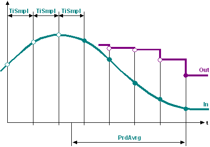

AVE_TIME: Time-based average
The AVE_TIME (FB408) block calculates the average value for a number of previous input values over an adjustable time period.
Functionality
The function acquires input values [In] in defined time intervals [TiSmpl] and calculates the average value for the values in the time period [PrdAvrg]. After each interval, there is a new average value [Out].

Enabling and disabling the function
- When [EnFnct] = 1 (Yes), the function is enabled.
- When [EnFnct] = 0 (No), the function is disabled. No new input values are acquired and average value calculation is stopped. The last average value is available at output [Out].
- When changing to [EnFnct] = 1 (Yes), average value calculation continues at the same location using the last values.
Reset.
When [Reset] = 1 (Yes), input [In] is issued at output [Out]. The acquired input values are deleted from the buffer.
Buffer
- The values to be averaged are written to a buffer. This buffer is limited to 30 entries. Set the time interval [TiSmpl] so that max. 30 entries are saved in the time period [PrdAvrg]. The block automatically corrects the interval if it is too short.
- If the time period [PrdAvrg] has more than 30 single values ( [PrdAvrg] > 30 * [TiSmpl] ), the block automatically enlarges the interval [TiSmpl] to ( [TiSmpl] = [PrdAvrg] / 30 ).
Inputs
Pin | E | Description |
EnFnct | p | Enable function. 1 (Yes): The function is enabled. 0 (No): The function is disabled. |
In | pa | Input. |
Reset | p | Reset. 1 (Yes): Buffer is deleted. [Out] = [In] 0 (No): The function is operating. |
PrdAvrg | pa | Period for averaging. All input values acquired in this time period are averaged. |
TiSmpl | pa | Sampling time. Time between the acquired input values. Condition: [TiSmpl] >= [PrdAvrg] / 30 |
Outputs
Pin | E | Description |
Out | a | Output |
ValMax | a | Maximum value |
ValMin | a | Minimum value |
Input values
Pin | Description | Data type | Default value | E.g. Engineering unit or Text group | Min. | Max. |
EnFnct | Enable function. | Boolean | 1 (Yes) | No, Yes |
|
|
In | Input. | Real | 0.0 |
|
|
|
Reset | Reset. | Boolean | 0 (No) | No, Yes |
|
|
PrdAvrg | Period for averaging. | Time | 0ms | T#0d_0h_0m_0s_0ms |
|
|
TiSmpl | Sampling time. | Time | 0ms | T#0d_0h_0m_0s_0ms |
|
|
Output values
Pin | Description | Data type | Default value | E.g. Engineering unit or Text group | Min. | Max. |
Out | Output. | Real | 0.0 |
|
|
|
ValMax | Maximum value | Real | 0.0 |
|
|
|
ValMin | Minimum value | Real | 0.0 |
|
|
|
Process response
In the first process cycle, [Out] = 0.
In the second process cycle, [Out] = the average value of the first two values.
In the third process cycle, [Out] = the mean value of the first three values, etc.

Troubleshooting
Standard (see General rules and information).